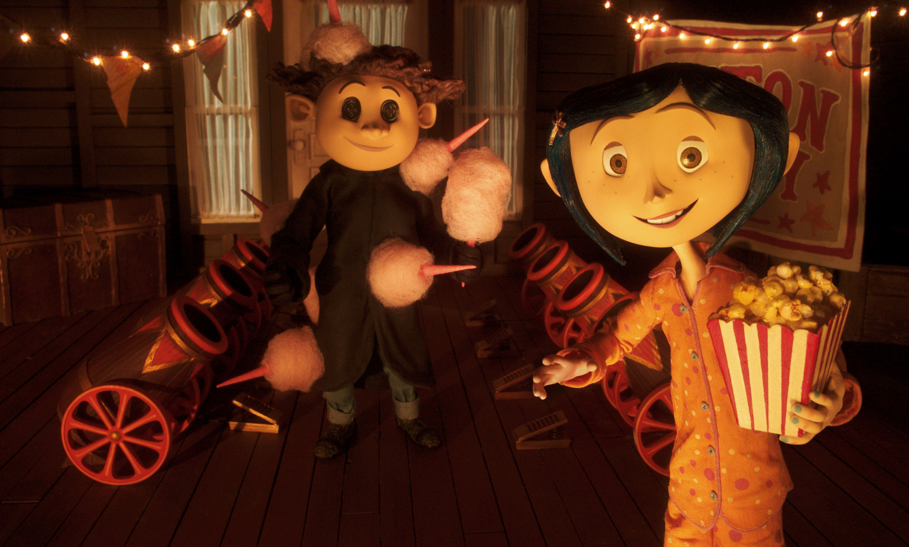

Intro to Coraline
Coraline is an animated horror movie that came out to the oublic in 2009. The movie was directed by Henry Selick who specialized with stop-motion animation. The film tells the story of its curious character discoveing an alternate universe behind a secret door in her new home, unware that it is a dark and evil.

Coralines Friends
Her friends are named Wybie and a stray black cat, who help her set things right and helps her become closer to her "real parents". Although the adventure she is about to take will make her question reality itself because of her other parents in this fanatsy world. Her friends and neighbors in her real world warn her about how she is in danger yet she doesn't listen to the signs. Her being stubborn and going through the secret door at night puts herself and her friends and neighbors in danger.